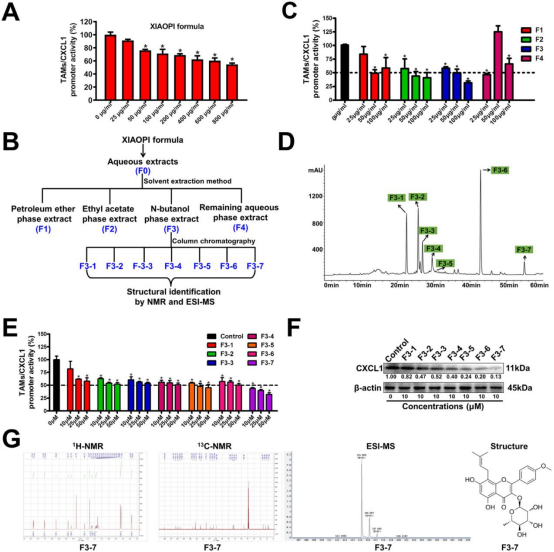
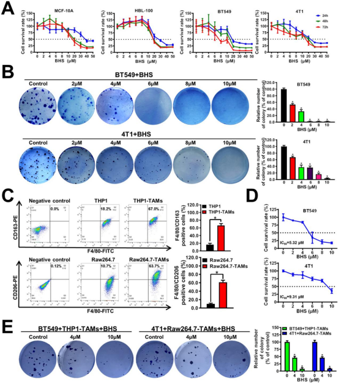
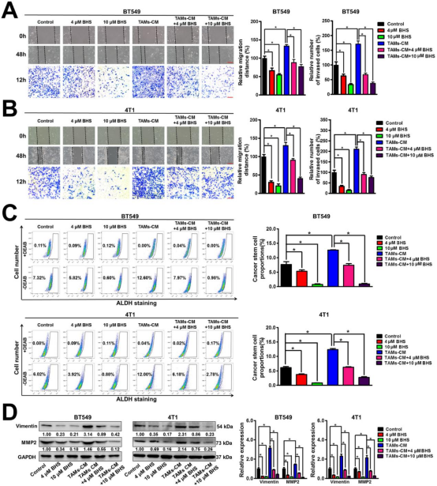
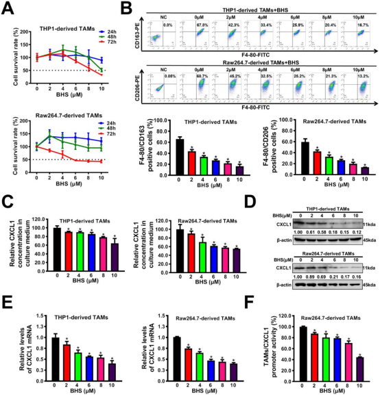
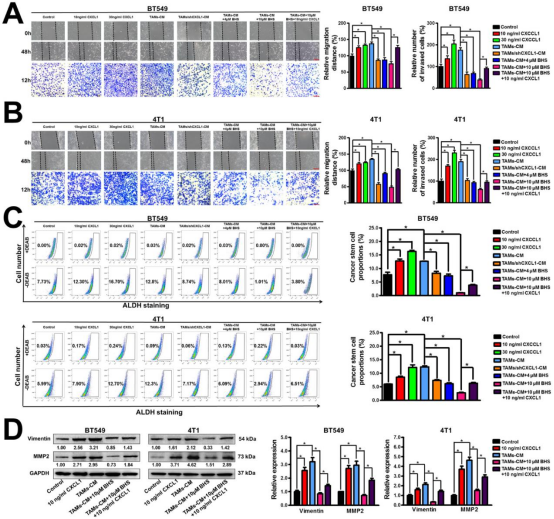
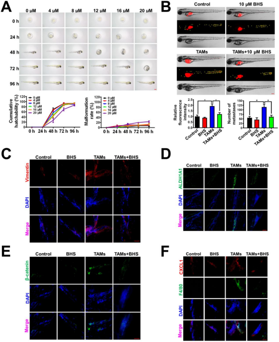
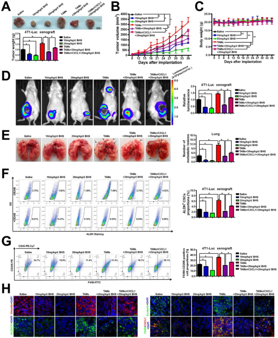

宝藿苷i通过下调肿瘤相关巨噬细胞/C-X-C基序趋化因子配体1通路抑制乳腺癌转移
王胜奇a,b，王能a,b,c，黄晓伟a,b,c，杨博文a,b，郑轶枫a,b，张菊萍a,b，王璇a,b，林毅a,b，王志宇a,b,c,*
DOI: https://doi.org/10.1016/j.phymed.2020.153331
Phytpmedicine（IF 5.340）
关键词：宝藿苷i；消癖颗粒；乳腺癌转移；肿瘤相关巨噬细胞；CXCL1；ALDH，醛脱氢酶；BHS，宝藿苷i；CM，条件介质；CSCs，癌症干细胞；CXCL1，C-X-C基序趋化因子配体1；Dil，1，1'-二十八烷基-3，3，3'，3'-四甲基吲哚卡蓝氨酸高氯酸盐；ESI-MS，电喷雾电离质谱；MDSCs，髓源性抑制细胞；NMR，核磁共振；SFDA，国家食品药品监督管理局；TAMs，肿瘤相关巨噬细胞；TCM，中医。
摘要
背景
乳腺癌是女性最常见的恶性肿瘤，转移是乳腺癌相关死亡的主要原因。我们之前的研究表明，中国国家食品药品监督管理局（SFDA）新批准的药物消癖配方可以通过调节肿瘤相关巨噬细胞/ C-X-C基序趋化因子配体1（TAMs / CXCL1）途径来显著抑制乳腺癌转移。然而，消癖颗粒抗转移作用的生物活性化合物尚不清楚。
目的
本研究旨在从消癖颗粒中分离出抗转移作用的生物活性化合物，并阐明其作用机制。
研究设计/方法
采用TAMs/CXCL1启动子活性引导分离和多种化学结构鉴定方法，筛选消癖颗粒中的生物活性化合物。乳腺癌细胞和TAMs在体外共培养或在体内共注射以模拟它们的共存。应用多种分子生物学实验、斑马鱼乳腺癌异种移植模型和小鼠乳腺癌异种移植物来验证所筛选化合物的抗转移活性。
结果
生物活性引导分离鉴定宝藿苷i（BHS）是消癖颗粒抑制TAMs/CXCL1启动子活性的关键生物活性化合物。功能研究表明，BHS可以显著抑制人类和小鼠乳腺癌细胞的迁移和侵袭以及转移相关蛋白的表达，同时降低乳腺癌干细胞（CSCs）的比例。此外，BHS可以抑制TAMs的M2表型极化，从而减弱其CXCL1的表达和分泌。值得注意的是，机理研究证实，TAMs/CXCL1是BHS抑制乳腺癌转移的关键靶标，因为外源添加CXCL1显著消除了BHS对乳腺癌细胞的抗转移作用。此外，BHS在体内高度安全，因为它对斑马鱼胚胎没有表现出可观察到的胚胎毒性或致畸作用。更重要的是，BHS显著抑制了斑马鱼乳腺癌异种移植模型和小鼠乳腺癌异种移植物中的乳腺癌转移和TAMs/CXCL1活性。
结论
这项研究不仅为TAMs/CXCL1作为抗转移药物发现的可靠筛选靶点提供了新的见解，而且还表明了BHS是转移性乳腺癌治疗的有前景的候选药物。
介绍
乳腺癌仍然是最常见的癌症类型，也是全球女性癌症相关死亡的主要原因。仅乳腺癌就占全球女性癌症发病率的 24.2% 和癌症死亡率的 15%（Bray 等人，2018 年）【1】。据估计，2018 年全球约有 210 万例新发乳腺癌病例，转移性疾病占相关死亡人数的大部分（Bray等，2018）【1】。转移性乳腺癌目前在很大程度上无法治愈，中位 5 年生存率为 26%（DeSantis 等人，2017年）【2】。因此，迫切需要进一步阐明转移机制并鉴定新型抗转移药物以改善乳腺癌患者的临床结局。
几千年来，中医药 (TCM) 在中国的癌症治疗中一直备受推崇（Nie等人,2016）【3】。值得注意的是，越来越多的证据清楚地表明，中医可以延长乳腺癌患者的生存期并降低其死亡风险（Tian等人，2015；Wang等人，2015）【4-5】。多项研究表明，重塑肿瘤免疫抑制微环境是中医药治疗抑制肿瘤发生和进展的核心机制之一（Ye等人,2015）【6】。中医药治疗可通过调节免疫抑制细胞增强抗肿瘤免疫反应，如逆转TAMs和T淋巴细胞的免疫表型，促进树突状细胞成熟，抑制髓源性抑制细胞（MDSCs）功能和调节 Th1/Th2 因子（guo等人,2015)【7】。TAMs通常占总肿瘤基质细胞的30%至50%，并且仍然是包括乳腺癌在内的多种恶性肿瘤中最丰富的免疫细胞群（De la Fuente Lopez等人，2018；Lao等人，2017年）【8-9】。TAMs可以分泌趋化因子作为炎症介质，将更多的免疫抑制细胞募集到肿瘤微环境中，最终加速癌症转移（De la Fuente Lopez等，2018）【8】。据报道，CXCL1是TAMs释放的最丰富的趋化因子（Palomino 和 Marti，2015；Wang 等，2018）【10-11】。越来越多的证据还表明，乳腺基质中升高的CXCL1表达通常预示着乳腺癌患者的不良预后（Zou等，2014）【12】。就机制而言，TAMs分泌的CXCL1可以通过招募 MDSC 形成免疫抑制和促转移微环境，从而促进癌细胞存活、化学抗性和转移（Acharyya et al, 2012；Miyake et al,2016）【13-14】。我们之前还证明，TAMs分泌的CXCL1可以通过上调β-连环蛋白途径促进乳腺CSCs的自我更新，从而促进乳腺癌转移（Wang 等人，2019b）【15】。
所有这些发现表明，靶向TAMs/CXCL1通路可能是一种有前途的乳腺癌抗转移策略。考虑到基于靶点的筛选策略正在成为设计新药或从自然资源中寻找生物活性先导化合物的重要工具，我们推测，TAMs/CXCL1活性引导的中药配方或中药中生物活性化合物的分离可能是乳腺癌抗转移药物开发中一种前途可靠的筛选技术。
自1980年代以来，消癖颗粒已被经验性地广泛用作中医治疗乳腺增生和预防乳腺癌的辅助疗法。消癖颗粒最近通过临床试验的安全性和有效性测试，获得了国家食品药品监督管理局（SFDA）的批准。
最近，我们系统地证明了消癖颗粒在抑制乳腺癌耐药和转移方面也很有效。例如，消癖颗粒已被证明可通过减弱CXCL1介导的自噬来促进紫杉醇在乳腺癌中的化学敏感性（Wang et al,2019a）【16】。此外，消癖颗粒可通过下调MMTV-PyVT+/-自发性乳腺癌小鼠的TAMs/CXCL1通路来抑制乳腺癌的发生和转移（Wang et al,2017）【17】。消癖颗粒还可以通过调节TAMs/CXCL1/CSCs活性显著延缓小鼠乳腺癌异种移植物的生长和肺转移（Wang et al,2019b）【15】。这些结果清楚地揭示了消癖颗粒抑制乳腺癌转移的生物学活性和分子机制。然而，消癖颗粒对乳腺癌的抗转移作用的物质基础却鲜为人知。从消癖颗粒中筛选生物活性化合物具有重要的临床意义，可进一步促进消癖颗粒的开发和临床应用，以及发现新型抗转移候选药物。
材料和方法
消癖颗粒中生物活性成分的生物活性引导分离鉴定。
消癖颗粒是从10种中草药的混合物中通过回流萃取法提取的，包括淫羊藿、肉苁蓉、益母草、丹参、莪术、益母草、女贞子、制何首乌、鳖甲、牡蛎。关于其制备和质量控制方法的详细描述之前已经报道过（Wang et al.,2017）【17】。
在本研究中，首先将2.5kg消癖颗粒和10升水混合。然后采用回流提取法和冷冻干燥工艺制得消癖颗粒的水提取物（F0）。消癖颗粒的水提取物进一步采用溶剂萃取法用不同极性溶剂萃取，得到石油醚相提取物（F1）、乙酸乙酯相提取物（F2）、正丁醇相提取物（F3）和剩余的水相提取物（F4）。将每个组份真空干燥，溶解在完整的培养基中，并通过CXCL1启动子报告基因测定进行第一轮筛选。随后将正丁醇相提取物（F3）进行凝胶过滤柱色谱法和硅胶柱色谱法分离其生物活性化合物。通过核磁共振（NMR）和电喷雾电离质谱（ESI-MS）方法对这些分离的化合物进行化学鉴定。
细胞培养和诱导
非恶性人乳腺上皮细胞系 MCF-10A 和 HBL100、人乳腺癌细胞系 BT549、小鼠乳腺癌细胞系4T1、人急性单核细胞白血病细胞系THP1和小鼠巨噬细胞系 Raw264.7取自美国菌种保藏中心。上述细胞株的传代数均小于20。在D-荧光素底物存在下发出荧光的4T1-Luc细胞，是用慢病毒荧光素酶报告质粒转染4T1细胞获得的。所有这些细胞系的身份都通过短串联重复分析进行了验证。先前已经报道了细胞培养、TAMs诱导以及乳腺癌细胞和TAMs共培养的详细描述（Wang 等人，2019b）【15】，并且也在补充材料中提供。
细胞毒性测定
根据制造商的说明，使用 CCK8 试剂盒（C0038，Beyotime Biotechnology，中国上海）研究 BHS（纯度 98%，MB6526，美伦生物，中国大连）在不同类型细胞中的细胞毒性。
菌落形成试验
为了研究BHS对乳腺癌细胞生长的长期影响，如先前报道的那样进行了集落形成测定（Wang等人，2019b）【15】。
巨噬细胞极化分析
如前所述，通过使用流式细胞术分析巨噬细胞的表面标志物来研究巨噬细胞的表型变化（Wang等人，2019b）【15】。
伤口愈合测定和转孔测定
如前所述，为了研究外源性干预后乳腺癌细胞的迁移和侵袭能力变化，分别进行了伤口愈合试验和转孔测定（Yang 等人，2019a）【18】。
蛋白质印迹
如前所述（Jiao等人，2018）【19】应用蛋白质印迹分析。本研究中使用的一抗如下：波形蛋白 (10,366-1-AP)(Proteintech,芝加哥,美国),MMP2(A6247, ABclonal,波士顿,美国), CXCL1(AF5403,Affinity,辛辛那提，俄亥俄州，美国) , GAPDH (5174S) 和 β肌动蛋白（β-actin）(4970S, Cell Signaling Technology, CST,波士顿,马萨诸塞州，美国)。
乳腺肿瘤干细胞群体分析
根据制造商的说明，使用ALDEFLUOR干细胞鉴定试剂盒（01,700，STEMCELL Technologies，Vancouver，Canada）通过流式细胞术分析乳腺CSCs群。ALDH+亚群被量化并定义为乳腺CSCs。二乙氨基苯甲醛(DEAB) 是一种ALDH活性的特异性抑制剂，用于控制背景荧光。
酶联免疫吸附试验（ELisa）
进行Elisa测定以研究BHS对TAMs 分泌CXCL1的影响。简而言之，TAMs用不同浓度的BHS处理48小时。随后，收获TAMs并再次以5×105个细胞/孔的密度接种到6孔板中并培养24小时。然后，根据制造商的说明，使用人CXCL1 ELISA 试剂盒（SEA041Hu）或小鼠CXCL1 ELISA 试剂盒（SEA041Mu，USCN Business）通过酶联免疫吸附试验测量TAMs 的细胞培养上清液中的CXCL1浓度。
实时荧光定量PCR
使用RNAiso Plus(9109,TaKaRa,Tokyo,Japan)提取总RNA并使用 PrimeScriptTMRT试剂盒(RR047A,TaKaRa)逆转录成互补cDNA。使用SYBR® Premix Ex TaqTM II KIT（RR820A，TaKaRa）和ABI Quant Studio 7 Flex 实时 PCR 系统（Applied Biosystems，福斯特城，美国）进行cDNA扩增。引物序列如下：人类GAPDH基因的5’-GACTAACCCTGCGCTCCTG-3’（正向）和5’-GCCCAAT ACGACCAAATCAG-3’（反向）；人类CXCL1基因的5’-AGGGAATTCACCCCAAGAAC-3’（正向）和5’-ACTATGGGGGATGCAGGATT-3’（反向）。小鼠基因CXCL1基因的5’-GACTCCAGCCACACTCCAAC-3’（正向）和5’-TGACACCGCAGCTCATTG-3’（反向）。小鼠β-肌动蛋白的5‘-GGAGGGGGTTGAGGTGTT-3’（正向）和5’-GTGTGCACTTTTATTGGTCTCAA-3’（反向）。每个试剂盒的分析程序均按照制造商的说明进行。2−ΔΔCt法用于计算各组间基因的相对表达水平。
CXCL1启动子报告基因分析
如前所述，通过双荧光素酶报告基因测定法检测消癖颗粒提取物或BHS对 TAMs的CXCL1启动子活性的影响（Wang 等人，2019b）【15】。
质粒和细胞转染
shCXCL1质粒购自 Vigene Biosciences（中国济南），并根据制造商的说明通过 LipoFiterTM 试剂（Hanbio Biotechnology Co.，LTD. 上海，中国）转染到TAMs中。
斑马鱼胚胎毒性试验
进行斑马鱼胚胎毒性试验以研究BHS的体内毒性。AB株斑马鱼获自中国斑马鱼资源中心（中国武汉）。斑马鱼的维护和产卵是按照我们之前描述的（Jiao et al.,2018）【19】进行的。补充材料中提供了斑马鱼胚胎毒性试验的详细描述。
斑马鱼乳腺癌异种移植模型
建立斑马鱼乳腺癌异种移植模型以研究BHS对乳腺癌的体内抗转移作用。简而言之，BT549 细胞被5细胞膜红色荧光探针1,1’-Dioctadecyl-3,3,3’,3’-tetramethylindocarbocyanine perchlorate (DiI, Sigma-Aldrich) 标记为红色荧光。在受精后48小时，将200个Dil染色的BT549细胞或200个Dil染色的BT549细胞和600个THP1衍生的TAMs的混合物悬浮在50nl培养基中，并通过显微注射器注射到每个胚胎的肠下血管中以建立斑马鱼乳腺癌异种移植模型。将携带乳腺癌细胞的幼年斑马鱼（48小时龄）在96孔板（每孔一条鱼）中进一步培养，并如图所示将10 μm BHS 添加到水产养殖水中。处理 48 h 后，在荧光显微镜下观察斑马鱼中Dil染色的BT549细胞（Nikon Eclipse C1,东京,日本）。
组织免疫荧光
如先前报道的那样进行免疫荧光（Jiao 等人，2018；Wang 等人，2019b）【19】【15】。对于波形蛋白检测，将组织切片与波形蛋白抗体（10,366-1-AP，Proteintech）在 4°C下孵育过夜，然后与Alexa Fluor® 555偶联抗兔IgG（4413S，CST）的二抗孵育2小时。对于ALDH1A1检测，将组织切片与ALDH1A1抗体（BF0220，Affinity）在4°C下孵育过夜，然后与Alexa Fluor®488偶联抗小鼠IgG（A10680，Thermo Fisher，Waltham，MA，美国）2 小时。对于β-连环蛋白检测，将组织切片与连环蛋白抗体（51,067-2-AP，Proteintech）在4°C下孵育过夜，然后与Alexa Fluor® 488偶联抗兔IgG（4412S，CST）的二抗孵育.对于F4/80和 CXCL1检测，斑马鱼切片与F4/80-FITC抗体（sc71,085，Santa Cruz）和CXCL1 抗体（AF5403，Affinity）在4°C下孵育过夜，然后与Alexa Fluor® 555结合抗兔IgG (4413S, CST) 孵育2小时。使用倒置荧光显微镜（Ts2R-FL，尼康，东京，日本）获得荧光图像。
动物实验
动物实验经广东省中医院动物护理和使用机构委员会（编号2,018,044）批准，并根据我们机构的实验动物使用指南进行。6周龄雌性Balb/c小鼠购自广东省医学实验动物中心，在广东省中医院实验动物中心无特定病原菌条件下饲养，给予无菌食物和水。对于4T1-Luc异种移植物的建立，2×106个4T1-Luc细胞悬浮于200μl PBS中并皮下接种到小鼠的乳腺脂肪垫中。将小鼠随机分为6组（每组n=9），包括盐水组（0.5%羧甲基纤维素钠溶液，腹膜内[i.p.]）；10 mg/kg/d BHS组 (i.p.)；20 mg/kg/d BHS组(i.p.)；TAMs组（4T1-Luc细胞与Raw264.7衍生的TAMs以1:3的比例共同注射，然后给予生理盐水，i.p.）；TAMs+20 mg/kg/d BHS组（4T1-Luc细胞与Raw264.7衍生的TAMs以1:3的比例共同注射，随后20 mg/kg/d BHS给药，i.p），和TAMs/rCXCL1 +20 mg/kg/d BHS组（4T1-Luc 细胞与Raw264.7/rCXCL1衍生的TAMs以1:3的比例共同注射，然后给予20 mg/kg/d BHS）。在整个治疗过程中，每3天对小鼠称重，并用游标卡尺测量它们的肿瘤。使用以下公式计算肿瘤体积 (V)：V =（长×宽2）/2。
腹膜内注射D-荧光素（150mg/kg体重，122,799，PerkinElmer，Boston，USA），小鼠每周使用 IVIS Lumina XR 体内成像系统（PerkinElmer）进行成像，以监测4T1-Luc异种移植物的生长和肺转移。当肿瘤长到合适的大小或小鼠存活到指定的天数时，用异氟醚对小鼠实施安乐死。然后，切除肿瘤和肺并拍照。通过机械方法从新鲜肿瘤中分离原代细胞，并进行如上所述的CSCs亚群分析或巨噬细胞表型分析。剩余的肿瘤组织储存在-80°C并用于组织免疫荧光，如上所示。
为了研究BHS对小鼠肝肾功能的毒性，在实验结束时分别采集生理盐水组和BHS处理组小鼠的血液。通过离心获得血清并使用自动生化分析仪（Roche Group，Basel，Switzerland）分析肝功能参数（丙氨酸转氨酶和天冬氨酸氨基转移酶）和肾功能参数（尿素、尿酸和肌酐）。
统计分析
使用SPSS 22.0软件（Abbott Laboratories，Chicago，USA）进行统计分析。数据以平均值±标准差表示，并使用单因素方差分析 (ANOVA) 和t检验进行两两统计显著性分析。在p<0.05时差异被认为是显著的。
结果
消癖颗粒的生物活性引导分离

图1消癖颗粒中生物活性引导的分离。
(A)消癖颗粒可呈剂量依赖性抑制 Raw264.7衍生的TAMs的CXCL1启动子活性。N=6。
(B)消癖颗粒的分馏提取方案。
(C)第一轮筛选确定消癖颗粒(F3)的正丁醇相提取物为对TAMs/CXCL1启动子活性具有最强抑制作用的子集。N=6。
(D)消癖颗粒正丁醇相提取物的HPLC指纹图谱。共获得并鉴定了7个单峰。(E F)第二轮筛选表明，F37在七类化合物中对TAMs/CXCL1启动子活性(N=6)和TAMs/CXCL1表达(N=3)的抑制作用最强。(G) 分离的F3-7化合物经NMR和ESI-MS方法将鉴定为BHS。所有值均表示为平均值±标准差SD。*p<0.05。
我们之前的研究表明，消癖颗粒可以通过抑制TAMs/CXCL1的转录活性来抑制乳腺癌的转移。为筛选消癖颗粒生物活性化合物，基于对TAMs/CXCL1活性的抑制作用，进行生物活性引导分级筛选消癖颗粒生物活性化合物。生物活性引导的分离试验是在中药研究中分离单一草药或配方中的生物活性化合物的常规实验。该系统通常基于通过石油醚、乙酸乙酯、正丁醇和剩余的水提取物连续分馏后的物质极性（Jo et al., 2020； Wozniak et al., 2010）【20-21】。由于配方中可能存在数千种植物化学物质，通常选择抑制效果最强的成分作为靶向提取物并进行下一轮分馏，因为在有限的资源下无法分析每个馏分（Han et al.,2018；Ilhan et al.,2020； Jo et等人，2020；李等人，2013）【22-24】。为了实现这一点，我们首先在巨噬细胞中建立了CXCL1荧光素酶报告系统，以识别消癖颗粒中靶向CXCL1的潜在生物活性化合物。消癖颗粒可以以剂量依赖性方式抑制Raw264.7衍生的TAMs的CXCL1启动子活性（图1A），这表明CXCL1荧光素酶报告系统的可靠性。
然后，通过回流提取法和冷冻干燥工艺获得消癖颗粒的水提取物（F0）。随后，将消癖颗粒的水提液进一步用不同极性溶剂萃取，得到石油醚相提取液（F1）、乙酸乙酯相提取液（F2）、正丁醇相提取液（F3）和剩余的水相提取液（F4）（图 1B）。第一轮筛选将F3部分确定为对CXCL1转录具有最强抑制功效的子集（图1C）。因此，我们通过大孔吸附树脂和硅胶技术进一步分离F3。如图1D所示，我们通过NMR和ESI-MS方法共鉴定出7种纯化化合物，包括松果菊苷 (F3-1)、二苯乙烯苷 (F3-2)、毛蕊花苷 (F3-3)、益母草碱(F3-4)、丹酚酸B(F3-5)、淫羊藿苷C (F3-6)（数据未显示）和 BHS (F3-7) 。在这 7 种化合物中，BHS 显示出对TAMs/CXCL1活性的抑制作用最高，这通过蛋白质印迹分析得到了进一步证实（图1E-G）。虽然这些结果表明BHS是潜在的CXCL1抑制剂，但不能排除其它化合物具有抑制CXCL1能力的可能性。总之，根据我们目前在本研究中的知识，BHS被确定为消癖颗粒中抑制CXCL1转录的最佳化合物。
BHS显著抑制共培养系统中乳腺癌细胞的生长

图2.BHS显著抑制共培养系统中乳腺癌细胞的生长。
(A)BHS在非恶性乳腺上皮细胞和高转移性乳腺癌细胞中的细胞毒性。
(B)低浓度(2×10μm) 的BHS显著抑制乳腺癌细胞系BT549和4T1的集落形成能力。
(C)通过流式细胞仪分析巨噬细胞表面标志物来确定TAMs的成功诱导。BT549细胞的条件培养基(CM)显著提高了人THP1巨噬细胞中的F4/80+/CD163+亚群，而4T1-CM显著提高了小鼠Raw264.7 巨噬细胞中的F4/80+/CD206+亚群数量。
(D-E)在TAMs共培养的情况下，低浓度的BHS还可以显著抑制BT549和4T1细胞的增殖和集落形成能力。所有值均表示为平均值±标准差SD。N=3。*p<0.05。
为了确认BHS是否为消癖颗粒的生物活性化合物，研究了BHS对非恶性乳腺上皮细胞和高转移性乳腺癌细胞的生长抑制作用。高于10μm的高浓度BHS对乳腺上皮细胞和乳腺癌细胞均表现出显著的细胞毒性。相比之下，低浓度（2×10 μm）的BHS在24-72h治疗期间只能轻微或中度抑制乳腺癌细胞系BT549和4T1的增殖，而对非恶性MCF-10A和HBL100没有明显的细胞毒性抑制（图2A）。这四种细胞在用BHS处理48小时后，BHS的所有IC50值均高于 10μm。然而，低浓度（2×10 μm）的BHS在两周培养期内显著抑制乳腺癌细胞系BT549和4T1的集落形成能力。这种差异表明，BHS 可以在长期给药后抑制乳腺癌细胞的增殖（图2B）。
乳腺癌细胞与肿瘤微环境中的多种基质细胞共存，而TAMs是其中最丰富的群体。TAMs通常偏向于M2样表型分化，从而促进肿瘤生长和转移。BT549细胞的条件培养基(CM)显著提高了人THP1巨噬细胞中的F4/80+/CD163+亚群，而4T1-CM 显著提高了小鼠Raw264.7巨噬细胞中的F4/80+/CD206+亚群（图2C），表明成功诱导M2表型巨噬细胞(TAMs)。然后，将乳腺癌细胞和TAMs在transwell共培养系统中共培养，以模拟它们的共存。有趣的是，低浓度(2×10μm) BHS可显著抑制共培养系统中BT549和4T1细胞的增殖。当BHS与TAMs共培养时，BT549 细胞和4T1细胞的IC50（半抑制浓度）值分别为5.32μm和9.31μm（图2D）。同时，低浓度的BHS还可以显著抑制BT549和4T1细胞在TAMs存在下的集落形成能力（图2E）。总之，即使在TAMs共培养的情况下，BHS也可以显著抑制乳腺癌细胞的增殖和集落形成能力。
BHS显著抑制TAMs诱导的乳腺癌细胞转移

图3.BHS显著抑制TAMs诱导的乳腺癌细胞转移。
(A-B)伤口愈合试验和 transwell试验结果表明，单独BHS治疗可以显著抑制乳腺癌细胞的迁移和侵袭能力，同时消除TAMs-CM对其的促进作用。比例尺代表400μm的伤口愈合测定图像和100μm的transwell测定图像。
(C)通过ALDH+染色和流式细胞术测定 BHS、TAMs-CM 或其组合处理后乳腺癌细胞中乳腺CSCs的比例。二乙氨基苯甲醛 (DEAB) 是一种ALDH活性的特异性抑制剂，用于控制背景荧光。(D)BHS、TAMs-CM或它们的组合处理后乳腺癌细胞中转移相关蛋白的表达水平。所有值均表示为平均值±标准差SD。N=3。*p<0.05。
接下来，我们研究了BHS对乳腺癌转移的影响。单独的BHS治疗可以显著抑制BT549和4T1细胞的迁移和侵袭能力。同时，BHS还显著消除了TAMs-CM 对乳腺癌细胞迁移和侵袭的促进作用（图 3A-B）。乳腺癌干细胞（CSCs）是乳腺癌复发和转移的根本原因，而过度活跃的乙醛脱氢酶（ALDH）活性与干细胞（CSCs）的生理特性密切相关（Wang和Lei，2017）【25】。BHS治疗显著降低了BT549细胞和 4T1细胞中的ALDH+亚群的数量，而TAMs-CM显著增加了这些群体的数量，表明 BHS可以抑制乳腺CSCs的自我更新，而TAMs-CM（培养基）可以促进乳腺CSCs的自我更新。同时，BHS还显著消除了TAMs-CM对乳腺CSCs自我更新的促进作用（图3C）。此外，BHS显著减弱了BT549和4T1细胞中包括波形蛋白（Vimentin）和MMP2在内的转移相关蛋白的表达水平，而TAMs-CM达到了相反的效果，表明 BHS可以抑制乳腺癌转移，而TAMs-CM可以促进乳腺癌转移。此外，BHS显著逆转了TAMs-CM对乳腺癌细胞中转移相关蛋白的上调作用（图 3D）。总之，即使在 TAMs存在的情况下，BHS也可以在体外抑制乳腺癌转移。
BHS抑制M2表型极化、CXCL1表达和TAMs的分泌

图4.BHS抑制M2表型极化、CXCL1表达和TAMs的分泌。
(A)BHS在THP1衍生的TAMs和Raw264.7衍生的TAMs中的细胞毒性。N=3。
(B)BHS可以以剂量依赖性方式显著逆转TAMs的M2表型极化。N=3。
(C)酶联免疫吸附试验表明，BHS还以剂量依赖性方式显著抑制TAMs的CXCL1分泌。N=3.
(D-E)蛋白质印迹(N=3)和QPCR 测定(N=6)进一步证实了BHS对TAMs中CXCL1蛋白表达水平和mRNA转录水平的抑制作用。
(F)双荧光素酶报告基因检测表明BHS显著抑制TAMs中CXCL1基因的启动子活性。N=6。所有值均表示为平均值±标准差SD。*p<0.05。
如上所述，低浓度的BHS可以显著消除TAMs-CM对乳腺癌细胞增殖和转移的促进作用。因此，我们推测BHS可以通过调节TAMs来抑制乳腺癌的增殖和转移。因此，我们进一步研究了BHS对TAMs的影响。如图4A所示，浓度为2μm至10μm的BHS在THP1衍生的TAMs和Raw264.7衍生的TAMs中均没有明显的细胞毒性。这些结果表明，BHS可能通过其他机制来调节TAMs的促肿瘤作用，而不是通过对TAMs的直接细胞毒性作用。TAMs具有高度可塑性，可在刺激后转化为抗肿瘤发生的M1表型巨噬细胞（Parisi 等人，2018年）【26】。如图4B所示，BHS可以以剂量依赖性方式显著逆转TAMs的M2表型极化。
酶联免疫吸附试验分析表明，BHS还以剂量依赖性方式显著抑制TAMs分泌CXCL1（图4C）。蛋白质印迹法和QPCR测定进一步证实了BHS对TAMs中CXCL1蛋白表达水平和mRNA转录水平的抑制作用（图4D-E）。双荧光素酶报告基因测定表明，BHS显著抑制了TAMs中CXCL1基因的启动子活性（图4F）。总之，BHS可以逆转TAMs中的M2表型极化以及CXCL1的表达和分泌。
BHS通过调节TAMs/CXCL1通路抑制乳腺癌转移

图5.BHS通过调节TAMs/CXCL1通路抑制乳腺癌转移。
(A-B)伤口愈合试验和 transwell试验结果表明，外源添加CXCL1可以显著促进人和小鼠乳腺癌细胞的迁移和侵袭能力。同时，外源性加入CXCL1可以消除BHS对共培养乳腺癌细胞迁移和侵袭的抑制作用。比例尺代表400μm的伤口愈合测定图像和100μm的 transwell测定图像。
(C)外源性添加重组CXCL1蛋白可以增加乳腺癌细胞中的 ALDH+亚群数量，同时逆转BHS对共培养的乳腺癌细胞亚群的下调作用。
(D)外源性添加CXCL1可以上调乳腺癌细胞中转移相关蛋白的表达水平，同时逆转BHS对共培养乳腺癌细胞的抑制作用。所有值均表示为平均值±标准差SD。N=3。*p<0.05。
接下来，我们进一步研究了CXCL1是不是BHS对乳腺癌转移抑制作用的关键靶点。如图5A-C所示，外源性添加CXCL1和TAMs-CM都可以显著促进乳腺癌细胞的迁移和侵袭能力，以及ALDH+乳腺癌干细胞亚群的自我更新。同时，TAMs和BHS治疗中的CXCL1干扰部分，抵消了TAMs-CM对乳腺癌迁移和侵袭以及乳房自我更新的促进作用。
另外，外源性添加CXCL1可以部分消除BHS对共同培养的乳腺癌细胞的迁移、侵袭和CSCs亚群的抑制作用。此外，外源性添加CXCL1和TAMs-CM均能上调乳腺癌细胞中转移相关蛋白的表达水平，而且外源性添加CXCL1可逆转BHS对共培养的乳腺癌细胞的抑制作用（图5D)。总之，BHS可以通过抑制TAMs/CXCL1 通路来抑制TAMs和乳腺癌细胞共培养系统中乳腺癌细胞的转移。
BHS在斑马鱼乳腺癌异种移植模型中抑制乳腺癌转移和TAMs/CXCL1活性

图6.BHS在斑马鱼乳腺癌异种移植模型体内抑制乳腺癌转移和TAMs/CXCL1活性。
(A)斑马鱼胚胎毒性试验表明，BHS(0-20μm)在斑马鱼胚胎的孵化和发育过程中都没有表现出明显的胚胎毒性或致畸作用。比例尺=400μm。N=10。
(B) BHS显著逆转了联合注射TAMs对斑马鱼移植BT549细胞转移的促进作用。黄色箭头表示转移性BT549细胞。比例尺=200μm。N=10.
(C-E)BHS显著逆转了联合注射TAMs对斑马鱼移植BT549细胞中转移相关蛋白 (波形蛋白)和干细胞相关蛋白(ALDH1A1和β-连环蛋白)表达水平的上调作用。比例尺= 40μm。
(F) BHS显著减弱了斑马鱼中F4-80和CXCL1的表达水平，表明BHS在体内也抑制了TAMs/CXCL1活性。比例尺=40μm。所有值均表示为平均值±标准差SD，*p<0.05。
接下来，使用斑马鱼模型研究了BHS的体内毒性和抗转移活性。首先，应用斑马鱼胚胎发育毒性试验研究BHS的体内毒性。如图6A所示，即使在20μm的高浓度下，BHS在斑马鱼胚胎的孵化和发育过程中也没有表现出明显的胚胎毒性或致畸作用。BHS处理之后，斑马鱼胚胎的累积孵化率或畸形率没有显著变化(p > 0.05)。同时，BHS处理后斑马鱼心包水肿、卵黄囊水肿和脊髓弯曲未见明显的形态学变化。这些结果突出显示BHS在体内的低毒性。
斑马鱼异种移植模型是通过将Dil染色的BT549细胞注射到斑马鱼体内来实时监测乳腺癌的生长和转移及其对BHS处理后的反应。如图6B所示，BHS显著逆转了联合注射TAMs对斑马鱼移植BT549细胞转移的促进作用。
此外，BHS显著逆转了联合注射的TAMs对斑马鱼移植BT549细胞中转移相关蛋白（波形蛋白）和干细胞相关蛋白（ALDH1A1和β-连环蛋白）表达水平的上调作用（图6C-E）.这些结果清楚地表明，在与TAMs联合注射的情况下，BHS可以显著抑制乳腺癌转移。更重要的是，BHS显著减弱了斑马鱼体内F4/80和CXCL1 的表达水平，表明BHS在体内也抑制了TAMs/CXCL1活性（图6F）。总之，BHS可以通过调节TAMs/CXCL1途径，抑制斑马鱼乳腺癌异种移植模型体内的乳腺癌转移。
BHS通过调节TAMs/CXCL1通路抑制小鼠乳腺癌异种移植模型体内乳腺肿瘤生长和肺转移

图7.BHS通过调节TAMs/CXCL1通路在体内抑制小鼠乳腺癌异种移植模型中的乳腺肿瘤生长和肺转移。
(A-B)BHS通过调节TAMs/CXCL1活性显著抑制小鼠4T1-Luc异种移植模型中的乳腺肿瘤生长。在存在或不存在TAMs或TAMs/rCXCL1共同注射的情况下，小鼠成功植入4T1-Luc异种移植物，并通过腹膜内注射接受盐水或BHS（10mg/kg/d 或 20mg/kg/d）治疗，如图所示.提供了来自不同组的4T1-Luc异种移植物的代表性肿瘤。(A)比较了来自不同组的4T1-Luc异种移植物的重量差异(A)以及肿瘤生长曲线(B)。N=9，比例尺=1厘米。
(C)比较不同组小鼠的体重变化。N=9。
(D-E)体内成像实验表明，BHS通过调节TAMs/CXCL1活性显著抑制小鼠4T1-Luc异种移植物中乳腺肿瘤的生长和肺转移。黑色箭头表示肺部乳腺癌的转移性病变。N=9.
(F-G)流式细胞术测定证实BHS可以显著降低ALDH+CSCs亚群(F)的比例以及M2表型TAMs(G)在4T1-Luc异种移植物中的浸润。N=9.
(H)采用组织免疫荧光法检测不同组小鼠4T1-Luc异种移植物中转移相关蛋白(波形蛋白)、干细胞相关蛋白(ALDH1A1和β-catenin)和巨噬细胞标志物(F4/80)以及CXCL1的表达水平。比例尺=20μm。所有值均表示为平均值±标准差SD。*p<0.05。
为了进一步验证BHS在体内对乳腺癌转移和TAMs/CXCL1活性的抑制作用，通过将荧光素酶标记的4T1-Luc细胞植入Balb/c小鼠的乳腺中，建立了小鼠乳腺癌异种移植模型。研究发现BHS的治疗显著延迟了4T1-Luc异种移植物的生长，而TAMs联合注射却显著促进了这一点。更重要的是，BHS治疗可以消除TAMs联合注射对4T1-Luc异种移植物生长的促进作用，但这可以通过联合注射TAMs中的CXCL1过表达进一步逆转（图7A-B）。这些结果表明，BHS可以通过减弱TAMs/CXCL1活性来抑制体内乳腺异种移植物的生长。
此外，没有观察到与BHS治疗相关的死亡或体重明显下降的现象（图7C）。如补充表1所示，在实验结束时，收集盐水组和BHS处理组小鼠的血液并进行毒性测定。BHS并未导致肝功能参数（丙氨酸转氨酶和天冬氨酸转氨酶）和小鼠肾功能参数（尿素、尿酸和肌酐），表明BHS对小鼠的肝肾功能没有明显影响。
值得注意的是，BHS治疗还显著抑制了4T1-Luc异种移植物的肺转移，而TAMs联合注射显著促进了肺转移。同时，BHS可以消除TAMs联合注射对4T1-Luc异种移植物肺转移的促进作用，这可以通过联合注射TAMs中的CXCL1过表达进一步逆转（图 7D-E）。
这些结果表明，BHS可以通过减弱TAMs/CXCL1活性来抑制体内异种乳腺移植物的肺转移。上述结果与我们之前的研究结果一致（Wang et al.,2019b; Zheng et al.,2020）【15】【27】，即通过CXCL1干扰抑制TAMs/CXCL1活性可以显著抑制小鼠4T1-Luc异种移植模型中的乳腺肿瘤生长和肺转移。
在机理探索方面，流式细胞术进一步验证了BHS可以显著降低ALDH+CSCs亚群的比例以及M2表型TAMs在4T1-Luc异种移植物中的浸润，而TAMs联合注射显著提高了它们。
更重要的是，BHS治疗显著消除了联合注射TAMs对CSCs自我更新和M2表型TAMs在4T1-Luc异种移植物中浸润的促进作用，但这可以通过联合注射TAMs中的CXCL1过表达进一步逆转（图7F-G）。
此外，组织免疫荧光测定表明，BHS的治疗，即使在存在TAMs联合注射的情况下，也能显著抑制了4T1-Luc异种移植物中转移相关蛋白(波形蛋白)和干细胞相关蛋白(ALDH1A1和β-catenin)的表达水平以及TAMs/CXCL1活性，但这可以通过联合注射的TAMs中的CXLC1过表达来逆转（图7H）。总之，BHS可以通过调节TAMs/CXCL1通路在体内抑制小鼠乳腺癌异种移植模型中的乳腺肿瘤生长和肺转移。
讨论
转移仍然是临床成功治疗乳腺癌的主要障碍。超过90%的乳腺癌相关死亡可归因于转移性疾病。因此，人们正在努力寻找转移性乳腺癌的新治疗靶点和药物。我们之前的数据表明，新获批治疗乳腺增生的药物消癖颗粒通过抑制 TAMs/CXCL1通路在小鼠自发性乳腺癌模型（Wang et al.,2017）【17】和小鼠乳腺癌异种移植模型中均能显著抑制乳腺癌的发生和肺转移。（Wang et al.,2019b)【15】。
BHS，又名淫羊藿苷II，是淫羊藿中的一种生物活性黄酮成分，（消癖颗粒中的一种中药）。在此，由TAMs/CXCL1启动子活性引导的分级分离和生物学验证方法进一步确定了BHS是解释消癖颗粒对TAMs的抗CXCL1作用的生物活性化合物。BHS可通过抑制TAMs/CXCL1 活性在体外和体内均可抑制乳腺癌转移。
值得注意的是，即使在20μm的高浓度下，BHS在体内也没有表现出可观察到的胚胎毒性或致畸作用。理想的抗转移药物应该是无毒的，在较低剂量下有效，经济且易于获得。BHS很容易从各种植物物种中获得，例如淫羊藿，可以很容易的提取（Khan等人，2015年）【28】。因此，这些结果有力地表明，BHS具有多种优势和良好的前景，可作为一种有前途的抗转移候选药物进行开发。然而，未来肯定需要更多的临床前研究和临床试验来验证BHS的抗转移应用。
BHS 具有多种生物学和药理特性，包括抗骨质疏松、抗炎、抗氧化和神经保护作用（Chen 等，2016）【29】。值得注意的是，在过去的十年中，越来越多的证据表明，BHS可以通过多种信号通路包括JAK2-STAT3、MAPK、PI3k-Akt-mTOR 和miRNAs (Chen 等,2016)【29】，调节细胞周期、细胞凋亡、血管生成和转移，从而对各种恶性肿瘤表现出抗肿瘤特性。例如，BHS可以通过激活p38通路诱导细胞周期停滞和急性髓性白血病细胞分化（Yang 等人，2019b）【30】。此外，BHS可以通过上调黑色素瘤中的miR-144来抑制细胞增殖和迁移（Peng和Zhang，2018）【31】。此外，BHS 还可以提高紫杉醇对人黑色素瘤细胞的化学治疗的敏感作用（Chen等，2016）【29】。
现有关于BHS抗肿瘤作用的研究大多集中在BHS对癌细胞的直接作用上。BHS是否可以通过调节免疫细胞的抗肿瘤免疫功能来抑制癌症的生长和转移尚不清楚。宋等人曾报道，用于报告非细胞毒性浓度的BHS可以抑制LPS刺激的巨噬细胞CM诱导的肺癌A549和H1299细胞的侵袭和EMT（Song等，2017）【32】，表明BHS和巨噬细胞之间存在潜在的相关性。然而，潜在的机制仍不清楚。在此，我们首次发现BHS还可以抑制M2表型极化、CXCL1表达和TAMs分泌，从而抑制TAMs/CXCL1介导的乳腺癌细胞转移和乳腺癌干细胞CSCs的自我更新。因此，我们的发现有力地表明了BHS作为乳腺癌治疗的抗转移候选药物的优势，不仅通过直接杀死癌细胞发挥作用，而且通过TAMs/CXCL1通路重塑肿瘤免疫微环境。
同样，Kim等人报道，BHS可以通过下调另一种趋化因子CXCL12及其结合受体 CXCR4（CXC趋化因子受体4）来抑制乳腺癌细胞的侵袭（Kim 和 Park，2014 年）【33】。此外，据报道，BHS在体外也表现出对T细胞和B细胞活化的选择性免疫抑制作用（Ma et al.,2004）【34】，表明BHS可能通过调节淋巴细胞来重塑肿瘤免疫微环境。考虑到肿瘤免疫微环境的复杂性，BHS对其他类型趋化因子和免疫细胞的调节作用仍需进一步研究。
在过去的几十年里，中医药被广泛认为是药物发现和开发的丰富资源。例如，2015年诺贝尔生理学或医学奖授予了药理学家屠呦呦，因为他们发现青蒿素是一种关键的抗疟药物，来自中药黄花蒿。草药提取物长期以来一直用于癌症治疗，据报道有 3000 多种草药用于临床治疗癌症（Amin 等，2009）【35】。过去几十年的广泛研究已经确定了许多被广泛用作一线抗癌药物的草药化合物，如紫杉醇、喜树碱、长春新碱和鬼臼毒素酊。尽管有一些新的药物发现方法，例如组合化学和基于计算机的分子建模设计，它们都不能取代中药化合物在抗癌药物发现和开发中的重要性。事实上，中药化合物将继续在未来高效抗癌药物的发现中发挥主导作用（Millimouno 等，2014）【36】。
然而，由于一种中药中可能含有数百种植物化学物质，因此确定中药配方或草药中的实际生物活性化合物仍然是一个障碍。因此，设计一种可靠的策略来专门筛选药材中的活性化合物至关重要。近年来，越来越多的研究强调了肿瘤微环境成分对乳腺癌细胞，尤其是乳腺癌干细胞CSCs的重要调控作用。所以，基于肿瘤微环境调控筛选药用植物中的活性化合物可能是比传统的以细胞毒性为导向的分离策略更具体、更经济的策略。在本研究中，采用TAMs/CXCL1启动子活性引导的分离方法分离消癖颗粒中的生物活性化合物。通过在体外和体内验证BHS的抗转移作用，该策略被证明是一种有前途且可靠的筛选技术。同时，这种以生物活性为指导的分级分离方法也表明BHS作为消癖颗粒质量控制的关键参考化合物之一。
结论
综上所述，生物活性指导的分级分离和生物验证方法确定了BHS是消癖颗粒的生物活性化合物，通过调节TAMs/CXCL1通路抑制乳腺癌转移。该研究不仅为TAMs/CXCL1作为抗转移药物发现的可靠筛选靶点提供了新的见解，而且还表明BHS作为转移性乳腺癌治疗的有希望的候选药物。
作者贡献
王志宇参与了数据的设计、分析、解读和文章的撰写。王胜奇进行了实验，分析了数据，并起草了手稿。黄晓伟进行了实验并分析了数据。王能、杨博文、郑佚枫、张菊萍、王璇、林毅参与了资料的解读、文稿的讨论和校对。所有作者都知道并同意论文的内容以及他们被列为论文的作者。All data were generated in-house, and no paper mill was used。所有作者同意对确保完整性和准确性的工作的所有方面负责。
竞争利益声明
作者宣称没有利益冲突。
致谢
这项工作得到了国家自然科学基金的支持[81873306,81573651,81973526, 81703749,81703764]；广东省科技厅[2016A030306025]；广东省特殊支持计划高层次人才[A1.3002.16.111.003]；广东省教育厅[2018KZDXM022,A1-2606-19-111-009]；广东省中医药局项目[20181132、20182044、20201132]；广东省自然科学基金博士研究基金[2017A030310213,2018A030310506]；广东省科技规划项目[2017B030314166]；广州市科技计划[201904010407]；广东省中医院中医药科技专项研究基金[YN2018MJ07,YN2018QJ08]和广州中医药大学青年学者基金会[QNYC20190101]。
补充材料
可以在doi.org/10.1016/j.phymed.2020.153331的在线版本中找到与本文相关的补充材料。
参考文献
【1】Bray, F., Ferlay, J., Soerjomataram, I., Siegel, R.L., Torre, L.A., Jemal, A., 2018. Global cancer statistics 2018: GLOBOCAN estimates of incidence and mortality worldwide for 36 cancers in 185 countries. CA Cancer J Clin 68, 394–424.
【2】DeSantis, C.E., Ma, J., Goding Sauer, A., Newman, L.A., Jemal, A., 2017. Breast cancer statistics, 2017, racial disparity in mortality by state. CA Cancer J Clin 67, 439–448.
【3】Nie, J., Zhao, C., Deng, L.I., Chen, J., Yu, B., Wu, X., Pang, P., Chen, X., 2016. Efficacy of traditional Chinese medicine in treating cancer. Biomed Rep 4, 3–14.
【4】Tian, H., Qin, W., Wu, W., Guo, P., Lu, Y., Liu, P., Liu, Q., Su, F., 2015. Effects of Traditional Chinese Medicine on Chemotherapy-Induced Myelosuppression and Febrile Neutropenia in Breast Cancer Patients. Evid Based Complement Alternat Med 2015, 736197.
【5】Wang, W., Xu, L., Shen, C., 2015. Effects of Traditional Chinese Medicine in Treatment of Breast Cancer Patients After Mastectomy: a Meta-Analysis. Cell Biochem. Biophys. 71, 1299–1306.
【6】Ye, L., Jia, Y., Ji, K.E., Sanders, A.J., Xue, K., Ji, J., Mason, M.D., Jiang, W.G., 2015.Traditional Chinese medicine in the prevention and treatment of cancer and cancer metastasis. Oncol Lett 10, 1240–1250.
【7】Guo, Q., Li, J., Lin, H., 2015. Effect and Molecular Mechanisms of Traditional Chinese Medicine on Regulating Tumor Immunosuppressive Microenvironment. Biomed Res Int 2015, 261620.
【8】De la Fuente Lopez, M., Landskron, G., Parada, D., Dubois-Camacho, K., Simian, D.,Martinez, M., Romero, D., Roa, J.C., Chahuan, I., Gutierrez, R., Lopez, K.F., Alvarez,K., Kronberg, U., Lopez, S., Sanguinetti, A., Moreno, N., Abedrapo, M., Gonzalez,M.J., Quera, R., Hermoso, R.M., 2018. The relationship between chemokines CCL2,CCL3, and CCL4 with the tumor microenvironment and tumor-associated macrophage markers in colorectal cancer. Tumour Biol. 40, 1010428318810059.
【9】Lao, L., Fan, S., Song, E., 2017. Tumor Associated Macrophages as Therapeutic Targets for Breast Cancer. Adv. Exp. Med. Biol. 1026, 331–370.
【10】Palomino, D.C., Marti, L.C., 2015. Chemokines and immunity. Einstein (Sao Paulo) 13, 469–473.
【11】Wang, N., Liu, W., Zheng, Y., Wang, S., Yang, B., Li, M., Song, J., Zhang, F., Zhang, X.,Wang, Q., Wang, Z., 2018. CXCL1 derived from tumor-associated macrophages promotes breast cancer metastasis via activating NF-kappaB/SOX4 signaling. Cell Death Dis 9, 880.
【12】Zou, A., Lambert, D., Yeh, H., Yasukawa, K., Behbod, F., Fan, F., Cheng, N., 2014.Elevated CXCL1 expression in breast cancer stroma predicts poor prognosis and isinversely associated with expression of TGF-beta signaling proteins. BMC Cancer 14,781.
【13】Acharyya, S., Oskarsson, T., Vanharanta, S., Malladi, S., Kim, J., Morris, P.G., ManovaTodorova, K., Leversha, M., Hogg, N., Seshan, V.E., Norton, L., Brogi, E., Massague,J., 2012. A CXCL1 paracrine network links cancer chemoresistance and metastasis.Cell 150, 165–178.
【14】Miyake, M., Hori, S., Morizawa, Y., Tatsumi, Y., Nakai, Y., Anai, S., Torimoto, K., Aoki, K.,Tanaka, N., Shimada, K., Konishi, N., Toritsuka, M., Kishimoto, T., Rosser, C.J., Fujimoto, K., 2016. CXCL1-Mediated Interaction of Cancer Cells with TumorAssociated Macrophages and Cancer-Associated Fibroblasts Promotes Tumor Progression in Human Bladder Cancer. Neoplasia 18, 636–646.
【15】Wang, S., Liu, X., Huang, R., Zheng, Y., Wang, N., Yang, B., Situ, H., Lin, Y., Wang, Z.,2019b. XIAOPI Formula Inhibits Breast Cancer Stem Cells via Suppressing TumorAssociated Macrophages/C-X-C Motif Chemokine Ligand 1 Pathway. Front Pharmacol 10, 1371.
【16】Wang, N., Yang, B., Muhetaer, G., Wang, S., Zheng, Y., Lu, J., Li, M., Zhang, F., Situ, H.,Lin, Y., Wang, Z., 2019a. XIAOPI formula promotes breast cancer chemosensitivity via inhibiting CXCL1/HMGB1-mediated autophagy. Biomed. Pharmacother 120,109519.
【17】Wang, N., Zheng, Y., Gu, J., Cai, Y., Wang, S., Zhang, F., Chen, J., Situ, H., Lin, Y., Wang,Z., 2017. Network-pharmacology-based validation of TAMs/CXCL-1 as key mediator of XIAOPI formula preventing breast cancer development and metastasis. Sci Rep 7,14513.
【18】Yang, B.W., Wang, N., Wang, S.Q., Li, X., Zheng, Y.F., Li, M., Song, J.X., Zhang, F.X., Mei,W.J., Lin, Y., Wang, Z.Y., 2019a. Network-pharmacology-based identification of caveolin-1 as a key target of Oldenlandia diffusa to suppress breast cancer metastasis.Biomed. Pharmacother. 112, 108607.
【19】Jiao, L., Wang, S.Q., Wang, N., Zheng, Y.F., Yang, B.W., Wang, D.M., Wang, Z.Y., 2018.Betulinic acid suppresses breast tumorigenesis by inducing metabolism reprogramming via caveolin-1 pathway. Basic Clin. Pharmacol. Toxicol. 123, 33–34.
【20】Jo, A., Een Kim, C., Lee, M., 2020. Serratane triterpenoids isolated from Lycopodium clavatum by bioactivity-guided fractionation attenuate the production of inflammatory mediators. Bioorg. Chem. 96, 103632.
【21】Wozniak, D., Janda, B., Kapusta, I., Oleszek, W., Matkowski, A., 2010. Antimutagenic and anti-oxidant activities of isoflavonoids from Belamcanda chinensis (L.) DC. Mutat.Res. 696, 148–153.
【22】Han, C., Wang, S., Li, Z., Chen, C., Hou, J., Xu, D., Wang, R., Lin, Y., Luo, J., Kong, L.,2018. Bioactivity-guided cut countercurrent chromatography for isolation of lysinespecific demethylase 1 inhibitors from Scutellaria baicalensis Georgi. Anal. Chim.Acta 1016, 59–68.
【23】Ilhan, M., Ali, Z., Khan, I.A., Tastan, H., Kupeli Akkol, E., 2020. Isolation and identification of triterpenes from Anthemis austriaca Jacq. through bioactivity-guided fractionation on polycystic ovary syndrome rat model. Arch. Gynecol. Obstet 301,1103–1111.
【24】Li, L.F., Chan, B.C., Yue, G.G., Lau, C.B., Han, Q.B., Leung, P.C., Liu, J.K., Fung, K.P.,2013. Two immunosuppressive compounds from the mushroom Rubinoboletus ballouii using human peripheral blood mononuclear cells by bioactivity-guided fractionation. Phytomedicine 20, 1196–1202.
【25】Wang, Y.P., Lei, Q.Y., 2017. Perspectives of Reprogramming Breast Cancer Metabolism.Adv. Exp. Med. Biol. 1026, 217–232.
【26】Parisi, L., Gini, E., Baci, D., Tremolati, M., Fanuli, M., Bassani, B., Farronato, G., Bruno,A., Mortara, L., 2018. Macrophage Polarization in Chronic Inflammatory Diseases: killers or Builders? J Immunol Res 2018, 8917804.
【27】Zheng, Y., Wang, N., Wang, S., Yang, B., Situ, H., Zhong, L., Lin, Y., Wang, Z., 2020.XIAOPI formula inhibits the pre-metastatic niche formation in breast cancer via suppressing TAMs/CXCL1 signaling. Cell Commun Signal 18, 48.
【28】Khan, M., Maryam, A., Qazi, J.I., Ma, T., 2015. Targeting Apoptosis and Multiple Signaling Pathways with Icariside II in Cancer Cells. Int. J. Biol. Sci. 11, 1100–1112.
【29】Chen, M., Wu, J., Luo, Q., Mo, S., Lyu, Y., Wei, Y., Dong, J., 2016. The Anticancer Properties of Herba Epimedii and Its Main Bioactive Componentsicariin and Icariside II. Nutrients 8, 563.
【30】Yang, J., Lan, J., Du, H., Zhang, X., Li, A., Zhang, X., Liu, Y., Zhang, J., Zhang, C., Ding, Y.,Zhang, T., 2019b. Icariside II induces cell cycle arrest and differentiation via TLR8/MyD88/p38 pathway in acute myeloid leukemia cells. Eur. J. Pharmacol. 846, 12–22.
【31】Peng, Y.G., Zhang, L., 2018. Baohuoside-I suppresses cell proliferation and migration by up-regulating miR-144 in melanoma. Pharm Biol 56, 43–50.
【32】Song, J., Feng, L., Zhong, R., Xia, Z., Zhang, L., Cui, L., Yan, H., Jia, X., Zhang, Z., 2017.Icariside II inhibits the EMT of NSCLC cells in inflammatory microenvironment via down-regulation of Akt/NF-kappaB signaling pathway. Mol. Carcinog. 56, 36–48.
【33】Kim, B., Park, B., 2014. Baohuoside I suppresses invasion of cervical and breast cancer cells through the downregulation of CXCR4 chemokine receptor expression.Biochemistry 53, 7562–7569.
【34】Ma, A., Qi, S., Xu, D., Zhang, X., Daloze, P., Chen, H., 2004. Baohuoside-1, a novel immunosuppressive molecule, inhibits lymphocyte activation in vitro and in vivo.Transplantation 78, 831–838.
【35】Amin, A.R., Kucuk, O., Khuri, F.R., Shin, D.M., 2009. Perspectives for cancer prevention with natural compounds. J. Clin. Oncol. 27, 2712–2725.
【36】Millimouno, F.M., Dong, J., Yang, L., Li, J., Li, X., 2014. Targeting apoptosis pathways in cancer and perspectives with natural compounds from mother nature. Cancer Prev Res (Phila) 7, 1081–1107.